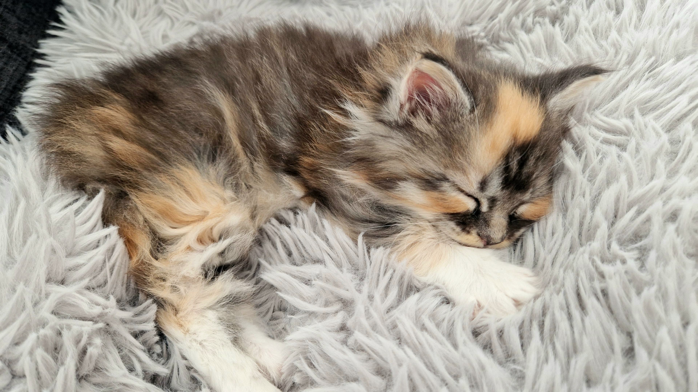
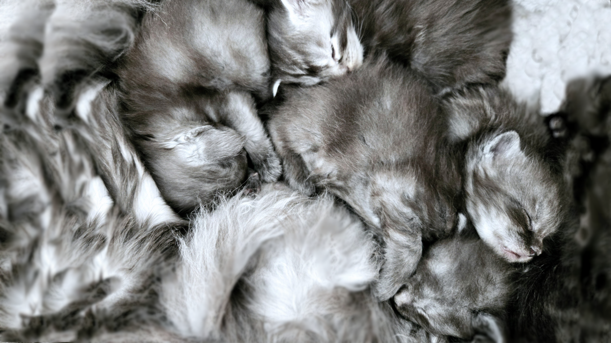

Portée 012024
Vanya
Seule de sa portée, découvrez l'histoire de Vanya en images, de ses premiers mois à sa vie d'adulte.

Notre prochaine portée de chatons Maine Coon LOOF est attendue pour la fin de l'année 2026.
Être informé(e)Des mariages pensés
avec exigence.
Chez Maine Queen, chaque mariage est pensé avec soin pour préserver les qualités qui font toute la majesté du Maine Coon : une belle morphologie, un tempérament équilibré, une santé suivie et un beau gabarit.
Notre futur mâle reproducteur, issu de lignées russes sélectionnées avec attention, rejoindra nos femelles lorsqu'il aura atteint sa pleine maturité. Nous privilégions le temps, la qualité et des unions réfléchies pour nos futures portées de chatons Maine Coon LOOF.

Une histoire, une portée, une famille.